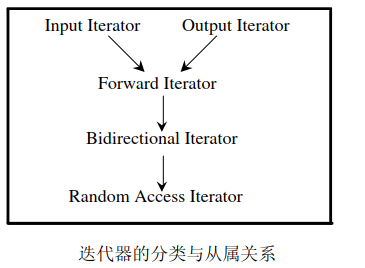

TinySTL 之迭代器 stl_iterator
提示：此篇文章需要了解 C++ 泛型编程的一些概念才能看得懂本文章。
之前在 stl_construct 一章的时候就提前看到了迭代器，这个对应的就是标准库中的迭代器内容，相当于指针的一层封装，用来遍历容器，迭代器用来作为容器和算法之间的桥梁，不同的容器对应有不同的迭代器类型， 最基本的几种迭代器类型如下：
迭代器类型
5 种迭代器定义如下
struct input_iterator_tag { }; // 输入迭代器
struct output_iterator_tag { }; // 输出迭代器
struct forward_iterator_tag : public input_iterator_tag { }; // 前向迭代器
struct bidirectional_iterator_tag : public forward_iterator_tag { }; // 双向迭代器
struct random_access_iterator_tag : public bidirectional_iterator_tag { }; // 随机迭代器
这些迭代器的分类与从属关系，可以下图表示。直线与箭头代表的并非 C++ 的继承关系，而是所谓concept（概念）与refinement（强化）的关系。

迭代器定义
标准的迭代器定义如下
template<typename Category, typename T, typename Distance = ptrdiff_t, typename Pointer = T*, typename Reference = T&>
struct iterator // 迭代器定义
{
typedef Category iterator_category; // 迭代器类型
typedef T value_type; // 迭代器所指对象的类型，即容器
// 所存放对象数据类型/内存中存放数据类型
typedef Distance difference_type; // 两个迭代器之间的距离
typedef Pointer pointer; // 迭代器指针运算
typedef Reference reference; // 迭代器所指对象的引用
};
迭代器萃取机
迭代器萃取机用于提取迭代器所代表的数据类型，之前说过，迭代器是对
template <typename I>
struct iterator_traits { // 萃取机萃取类型
typedef typename I::iterator_category iterator_category;
typedef typename I::value_type value_type;
typedef typename I:difference_type difference_type;
typedef typename I::pointer pointer;
typedef typename I::reference reference;
};
template <typename T>
struct iterator_traits<T*> { // 针对原生指针的偏特化版本1
typedef random_access_iterator_tag iterator_category; // 原生指针是 random_access_iterator_tag 类型
typedef T value_type;
typedef T* pointer;
typedef T& reference;
typedef ptrdiff_t difference_type;
};
template <typename T>
struct iterator_traits<const T*> { // 针对 const 原生指针的偏特化版本2
typedef random_access_iterator_tag iterator_category;
typedef T value_type;
typedef const T* pointer;
typedef const T& reference;
typedef ptrdiff_t difference_type;
};
作用于迭代器的函数
下面介绍作用域
iterator_traits 成员函数
| 函数 | 定义 |
|---|---|
| template <typename Iterator> typename iterator_traits<Iterator>::value_type* value_type(const Iterator&); | 萃取迭代器所指对象类型 |
| template <typename Iterator> typename iterator_traits<Iterator>::iterator_category iterator_category(const Iterator&); | 萃取迭代器类型 |
| template <typename InputIterator> typename iterator_traits<InputIterator>::difference_type distance(InputIterator first, InputIterator last); | 迭代器之间的距离 |
| template <typename InputIterator> typename iterator_traits<InputIterator>::difference_type __distance(InputIterator first, InputIterator last, input_iterator_tag); | input_iterator_tag迭代器之间 的距离 |
| template <typename RandomAccessIterator> typename iterator_traits<RandomAccessIterator>::difference_type __distance(RandomAccessIterator first, RandomAccessIterator last, random_access_iterator_tag); | random_access_iterator_tag迭 代器之间的距离 |
| template <typename InputIterator, typename Distance> void advance(InputIterator &i, Distance n); | 迭代器移动n个距离 |
| template <typename InputIterator, typename Distance> void __advance(InputIterator &i, Distance n, input_iterator_tag); | input_iterator_tag迭代器移动n 个距离 |
| template <typename BidirectionalIterator, typename Distance> void __advance(BidirectionalIterator &i, Distance n, bidirectional_iterator_tag); | bidirectional_iterator_tag迭代器移 动n个距离 |
| template <typename RandomAccessIterator, typename Distance> void __advance(RandomAccessIterator &i, Distance n, random_access_iterator_tag); | random_access_iterator_tag迭 代器移动n个距离 |
源码
本章迭代器以及对迭代器相关的操作定义如下，另外，后来的标准库添加了翻转链表的操作，为了减少代码量，方便阅读，这里就先不定义了迭代器的反转操作。
#ifndef STL_ITERATOR_H
#define STL_ITERATOR_H
#include <cstddef>
namespace TinySTL {
// 1. 定义5种迭代器类型
struct input_iterator_tag { }; // 输入迭代器
struct output_iterator_tag { }; // 输出迭代器
struct forward_iterator_tag : public input_iterator_tag { }; // 前向迭代器
struct bidirectional_iterator_tag : public forward_iterator_tag { }; // 双向迭代器
struct random_access_iterator_tag : public bidirectional_iterator_tag { }; // 随机迭代器
// 2. 定义迭代器
template <typename Category, typename T, typename Distance=ptrdiff_t, typename Pointer=T*, typename Reference=T&>
struct iterator {
typedef Category iterator_category;
typedef T value_type;
typedef Pointer pointer;
typedef Reference reference;
typedef Distance difference_type;
};
// 3. 定义萃取机
template <typename T>
struct iterator_traits {
typedef random_access_iterator_tag iterator_category;
typedef T value_type;
typedef T* pointer;
typedef T& reference;
typedef ptrdiff_t difference_type;
};
template <typename T>
struct iterator_traits { // 偏特化原生指针版本1
typedef random_access_iterator_tag iterator_category;
typedef T value_type;
typedef T* pointer;
typedef T& reference;
typedef ptrdiff_t difference_type;
};
template <typename T>
struct iterator_traits<const T*> { // 偏特化原生指针版本2
typedef random_access_iterator_tag iterator_category;
typedef T value_type;
typedef const T* pointer;
typedef const T& reference;
typedef ptrdiff_t difference_type;
};
// 4. 定义函数 iterator_category() 萃取迭代器类型
template <typename Iterator>
typename iterator_traits<Iterator>::iterator_category
iterator_category(const Iterator&) {
typedef typename iterator_traits<Iterator>::iterator_category category;
return category();
}
// 5. 定义函数 distance_type() 萃取迭代器的距离类型
template <typename Iterator>
typename iterator_traits<Iterator>::difference_type*
distance_type(const Iterator&) {
return static_cast (0);
}
// 6. 定义函数 value_type() 萃取迭代器所指对象类型
template <typename Iterator>
typename iterator_traits<Iterator>::value_type*
value_type(const Iterator&) {
return static_cast<typename iterator_traits<Iterator>::value_type*> (0);
}
// 7. 定义函数 distance() 计算 first 和 last 之间的距离
//// input_iterator_tag, forward_iterator_tag, bidirectional_iterator_tag
template <typename InputIterator>
typename iterator_traits<InputIterator>::difference_type
__distance(InputIterator first, InputIterator last, input_iterator_tag) {
typename iterator_traits<InputIterator>::difference_type n = 0;
while (first != last) {
first++;
n++;
}
return n;
}
//// random_access_iterator_tag
template <typename RandomAccessIterator>
typename iterator_traits<RandomAccessIterator>::difference_type
__distance(RandomAccessIterator first, RandomAccessIterator last, random_access_iterator_tag) {
return last - first;
}
template <typename InputIterator>
typename iterator_traits<InputIterator>::difference_type
distance(InputIterator first, InputIterator last) {
typedef typename iterator_traits<InputIterator>::iterator_category category;
return __distance(first, last, category());
}
// 8. 定义函数 advance() 使得指针向前移动
//// input_iterator_tag, forward_iterator_tag
template <typename InputIterator, typename Distance>
void __advance(InputIterator &i, Distance n, input_iterator_tag) {
while (n--)
++i;
}
//// bidirectional_iterator_tag
template <typename BidirectionalIterator, typename Distance>
void __advance(BidirectionalIterator &i, Distance n, bidirectional_iterator_tag) {
if (n > = 0)
while( n-- ) ++i;
else
while ( n++ ) --i;
}
//// random_access_iterator_tag
template <typename RandomAccessIterator, typename Distance>
void __advance(RandomAccessIterator &i, Distance n, random_access_iterator_tag) {
i += n;
}
template <typename InputIterator, typename Distance>
void advance(InputIterator &i, Distance n) {
__advance(i, n, iterator_category(i));
}
}
#endif
测试
测试的例子如下